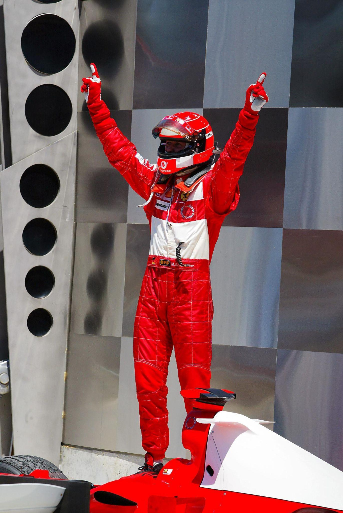
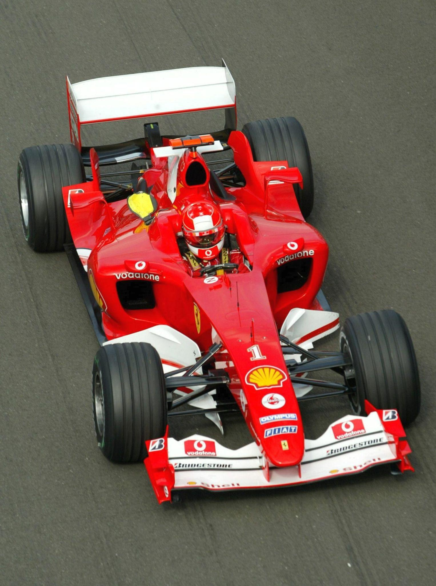

Formula 1 Legend
← Back to drivers
Gallery
Michael Schumacher
Michael Schumacher is a German former Formula 1 driver and seven-time World Champion. He is remembered for his success with Benetton and Ferrari and for his major role in Ferrari's dominant period in the early 2000s.
NationalityGerman
World titles7
F1 debut1991
Michael Schumacher photos


About Michael
Schumacher competed in Formula 1 from 1991 to 2006, then returned from 2010 to 2012. His career featured exceptional qualifying pace, race wins and multiple championship-winning seasons.
Career highlights
- Made his Formula 1 debut in 1991.
- Won two World Championships with Benetton.
- Won five consecutive titles with Ferrari from 2000 to 2004.
- Finished his career with seven Formula 1 World Championships.